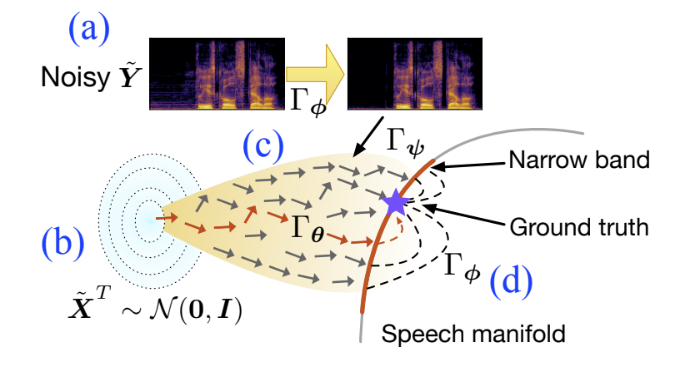

Wenxin Tai

|
2nd Year PhD student |
About Me
I (台文鑫) am currently a Ph.D. student in Software Engineering, University of Electronic Science and Technology of China (UESTC), supervised by Prof. Ting Zhong and Prof. Fan Zhou. Before that, I received the BS degree in Communication Engineering and MS degree (supervised by Prof. Qiao Liu and Prof. Tian Lan) in Software Engineering at UESTC in 2019 and 2022, respectively.
The long-term goal of my research is to build a machine that can work well on limited, complex, and uncertain data emerging in real-world applications. To this end, my research focuses on controllable generative probabilistic models and trustworthy artificial intelligence (TAI).
Research
Selected Publications
 |
DOSE: Diffusion Dropout with Adaptive Prior for Speech Enhancement |
 |
TrustGeo: Uncertainty-Aware Dynamic Graph Learning for Trustworthy IP Geolocation |
|  |
Revisiting Denoising Diffusion Probabilistic Models for Speech Enhancement: Condition Collapse,
Efficiency and Refinement |
 |
RIPGeo: Robust Street-Level IP Geolocation |
Full list of publications in Google Scholar.
Competitions and Awards
-
Best Student Paper Award of the 24th IEEE International Conference on Mobile Data Management (MDM), 2023
-
Artificial Intelligence Challenge Runner-up (Dialog Generation Track), hosted by www.people.com.cn, 2022
-
Excellent Master's Thesis of UESTC, 2022
-
Sichuan Outstanding Graduates, 2022
-
China National Scholarship, 2021
Academic Service
-
Journal reviewer for TKDE, TNNLS, TITS.